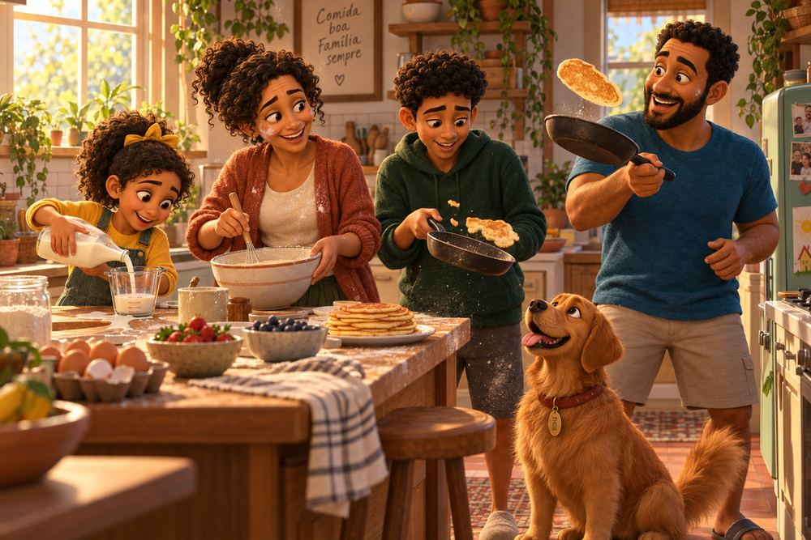
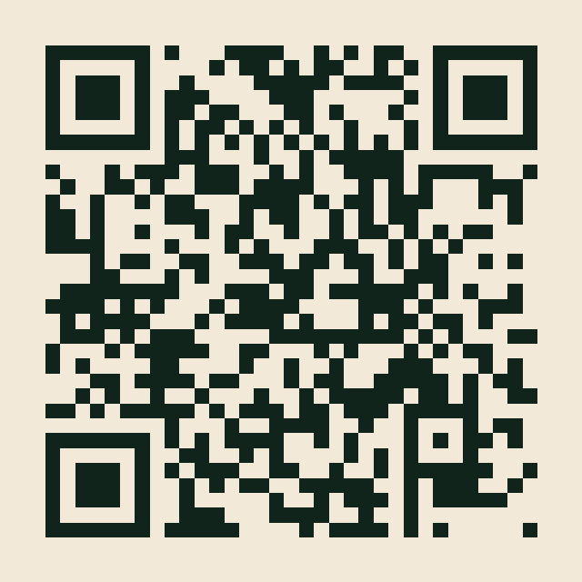
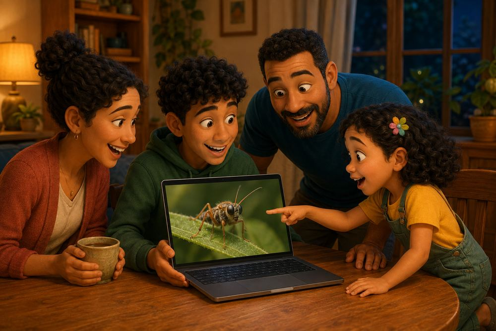
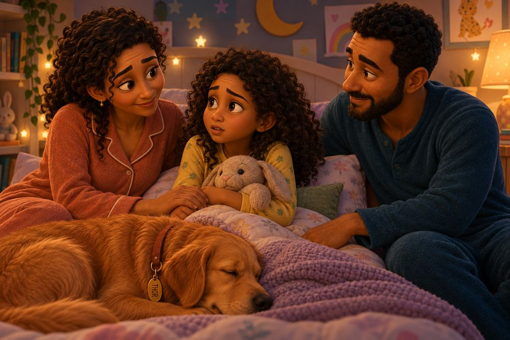
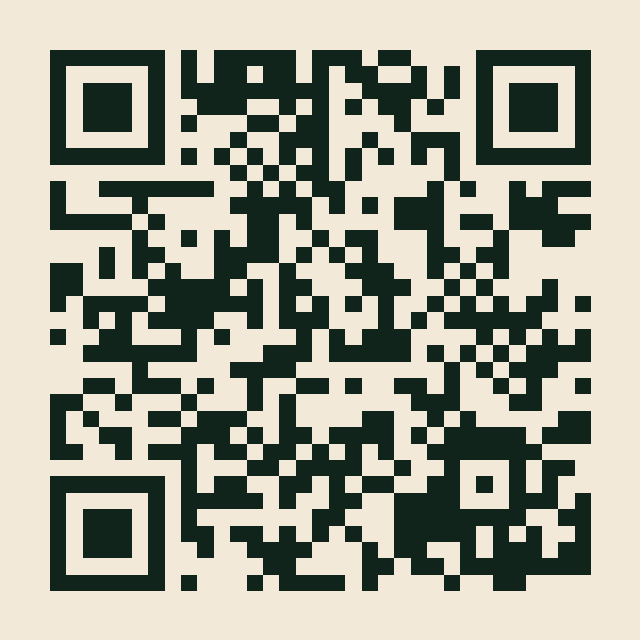
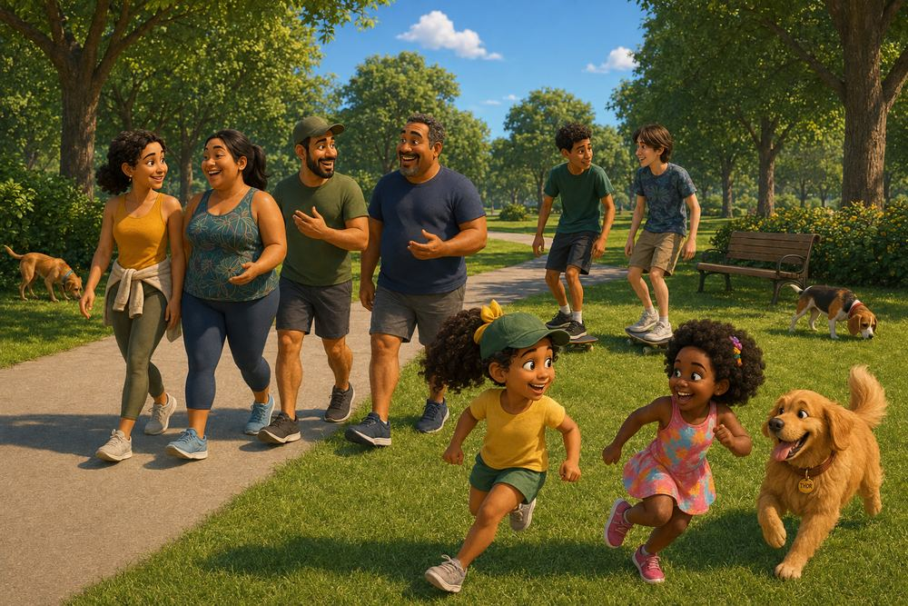
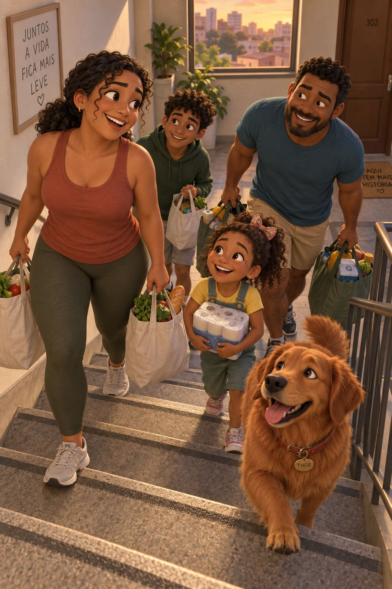

O MAPA DO HOJE
6 dias, 6 pilares, 6 pequenos começos.
Olá Experience — cada família, uma jornada.
Não julgamos a rotina de ninguém. A gente cria possibilidades pra família viver melhor, do jeito que for possível pra ela.
Esse mapa não é um plano, nem uma lista de tarefas. São 6 perguntas e 6 passos pequenos — um pra cada dia, um pra cada pilar que a Família Horizonte também está descobrindo, dia após dia.
Escolha por onde começar. Siga na ordem que quiser. O único compromisso é: um pequeno começo por dia, não um projeto de vida inteira.
E se a gente fosse descobrir?

Qual foi a última vez que a família comeu junta, sem tela, sem pressa?
Escolham uma refeição — qualquer uma — pra fazer só isso: sentar juntos, sem tela, sem pressa.


Quando foi a última vez que vocês aprenderam algo juntos, só por curiosidade?
Escolham uma pergunta sem resposta pronta ("por que o céu muda de cor?", "como funciona X?") e descubram juntos.

Quando foi a última vez que alguém da casa disse em voz alta o que estava sentindo, sem ser interrompido?
Reservem 10 minutos pra cada um dizer, numa palavra só, como o dia foi por dentro — sem ninguém corrigir ou explicar o sentimento do outro.


Seu corpo lembra a última vez que se moveu só por prazer, não por obrigação?
Troquem 10 minutos de tela por uma volta perto de casa — no ritmo de quem for mais devagar.

Que tipo de força sua família já usa todo dia, sem perceber?
Notem e digam em voz alta, pelo menos uma vez, quando alguém da casa "aguentou" algo difícil.

O tempo da sua família também é um recurso — onde ele anda sendo mais gasto?
Separem 15 minutos pra olhar juntos a agenda da semana seguinte, sem pressa, só pra saber o que vem por aí.
Nenhum passo aqui promete transformar sua rotina da noite pro dia. A mudança real começa quando você percebe que existe outro caminho possível — e experimenta, no seu tempo.
Este guia é reflexivo, não é orientação técnica nem substitui acompanhamento profissional.
Continue acompanhando a jornada da Família Horizonte em @olaexperienceoficial. Cada episódio é um pedaço dessa descoberta.
Esse é só o primeiro Mapa. A Família Horizonte segue descobrindo outros pequenos começos — e outros desafios como esse vão nascer daqui, cada um olhando mais de perto pra uma parte diferente da correria de vocês.
Olá Experience — cada família, uma jornada.
Marque cada dia conforme for completando. Adicione uma palavra sobre como foi.
"Se a gente pudesse comer uma coisa juntos todo domingo, o que seria?"
"Qual foi a última coisa nova que você aprendeu sem ninguém te ensinar?"
"Teve algum dia essa semana que você guardou um sentimento sem contar pra ninguém?"
"Qual foi a última vez que você se mexeu e nem percebeu, de tão gostoso que foi?"
"O que você aguentou essa semana que ninguém mais sabe o quanto foi difícil?"
"Se a gente ganhasse um dia inteiro de folga, no que a família ia gastar esse tempo?"
Cole essa página na geladeira, como lembrete.
Pra quando a sugestão do dia não couber na rotina:
Alimentação: se não der pra reunir todo mundo numa refeição, vale um lanche da tarde de 15 minutos, só dois da família, sem tela.
Cognitivo: se não surgir pergunta, vale assistir um vídeo curto sobre algo que ninguém da casa conhece e comentar depois.
Emocional: se 10 minutos for muito, vale uma frase só por pessoa, na hora de dormir.
Cardio: se não der pra sair de casa, vale dançar uma música na sala.
Força: se ninguém lembrar de nada difícil, vale perguntar diretamente "o que foi mais pesado essa semana?".
Bolso: se 15 minutos for muito, vale 5 minutos só pra olhar o dia seguinte juntos.
Toda semana a Família Horizonte mostra, de verdade, como é viver esses pilares no dia a dia — sem perfeição, com bagunça e tudo.
Acompanhe episódios como "A primeira experiência na natureza", "Duas horas só nossas" e "Finalmente Saiu" em @olaexperienceoficial.
Cada pequeno começo seu também pode virar uma história pra contar.
Pros dias mais difíceis, quando o pequeno começo não sai como planejado: